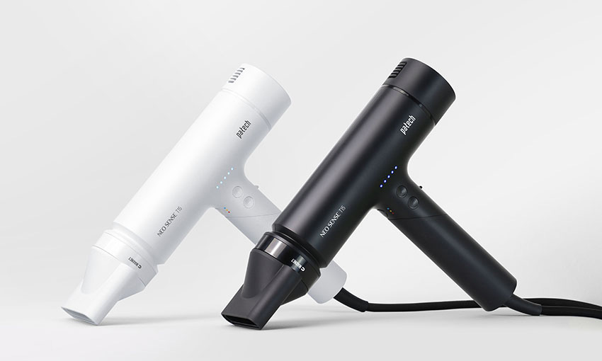
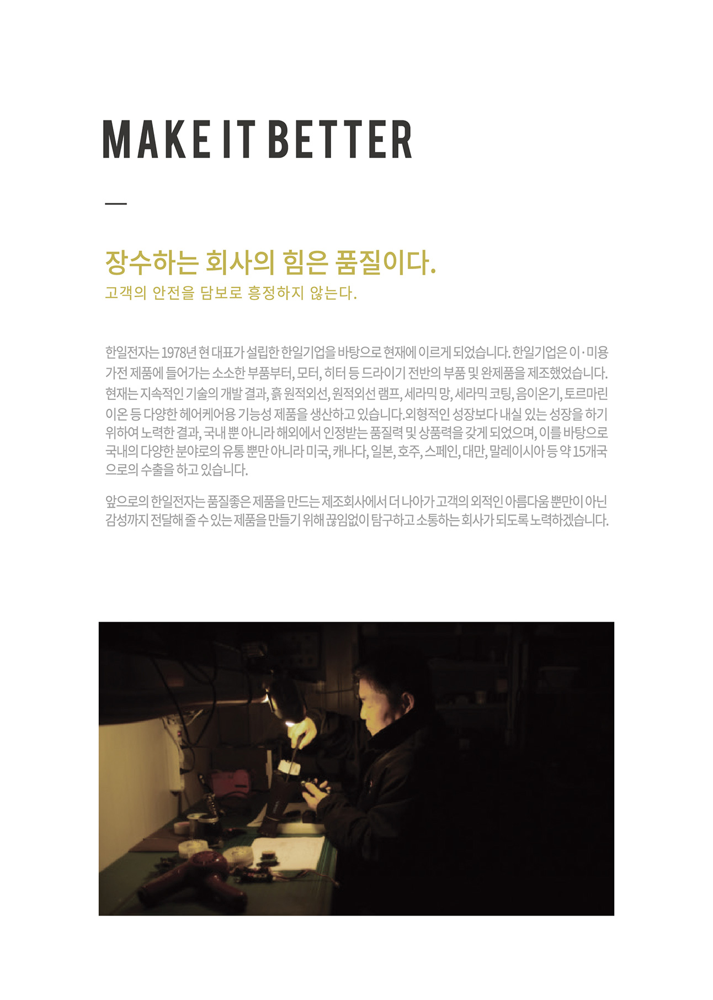
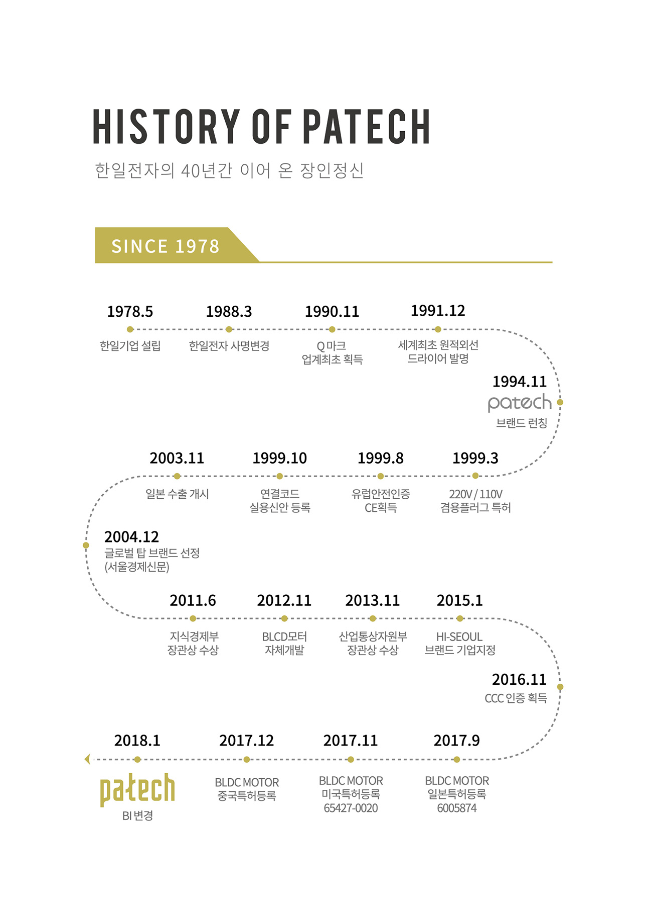

본문
한일전자 파테크,
‘2023년 NEO SENSE
네오센스 T15’
헤어드라이기 출시
- 6월 12~ 18일까지 SSG에서 사전예약 이벤트 진행...가격 할인 및 사은품 증정

이·미용 전문기업 한일전자는 BLDC 4.0모터로 업그레이드된 2023년형 ‘NEO SENSE 네오센스 T15’ 헤어드라이기를 이달 19일 출시한다고 밝혔다.
‘NEO SENSE 네오센스 T15’ 은 고객 안전을 최우선으로 드라이어를 개발·제조해온 노하우를 응집하여 약 2년간의 개발을 거쳐 4세대 BLDC모터를 개발하여 탑제하고 케어모드로 고객의 모발 손상을 최소화 시켜주는 헤어드라이기이다.
손잡이를 접이식으로 제작하여 컴팩트한 디자인으로 다양한 공간에 보관을 용이하게 할 수 있고, 순수 100% 국내 기술로 생산된 본 제품은 바람은 강력하면서 무게는 가벼운 경량 BLDC 드라이기이다.
네오센스 T15 드라이기는 메모리얼 모드가 있어 사용직전의 세팅 그대로 전원을 껏다 켜도 직전에 사용했던 온도/풍속을 그대로 사용할 수 있으며, 5단계의 바람 세기조절 및 3단계 온도 조절이 가능하여 모발상태에 맞춰 다양하게 조절이 가능하다.
한일전자는 출시를 기념해 12일부터 18일까지 SSG에서 사전 예약 이벤트를 진행한다. 사전예약 구매하는 고객에게 가격 할인 혜택을 제공하며 사은품 증정 및 리뷰 이벤트 행사도 진행한다. 신제품은 블랙, 화이트 색상 2종으로 출시되며, 온라인에서 구매 가능하다.
- 
- 